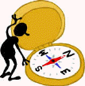

Help clients break the lethal [wounds + unawareness] cycle! 
Index: Clinical-intervention Options for
Common Family and Relationship Stressors
p. 1 of 2
By Peter K. Gerlach, MSW
Member NSRC Experts Council
> site overview > or Solutions article, prevention intro, or prior page > here
The Web address of this two-page index is http://sfhelp.org/pro/Rx_index.htm
Clicking links here will open a new window or an informational popup, so turn off your browser's popup blocker or accept popups from this nonprofit, ad-free site . If the windows distract you, read the article before following any links.
This article is one of a series on effective professional counseling, coaching, and therapy with (a) low-nurturance (dysfunctional) families and with (b) typical survivors of childhood neglect and trauma. These articles for professionals are under construction.
This series assumes you're familiar with:
Before continuing, pause and reflect - why are you reading this article? What do you need?
+ + +
Foundations
This experience-based clinical model is based on premises about...
the traits and structures of typical high-nurturance ("functional") family systems,
an unseen, toxic cycle of [wounds + unawareness] spreading down the generations;
five related hazards that reduce the nurturance level of most American families, and...
a sequence of self-improvement Lessons that aware family adults can work at together to avoid or reduce these hazards, and raise their nurturance level over time.
The Projects are concurrent and inter-related, so. benefits from later Projects require client progress on earlier ones - specially Lesson 1 (wound assessment and recovery), Lesson 2 (effective communication skills,), and Lesson 3 (evolve a pro-grief family, and free any blocked grief.
This series of clinical articles and resources proposes a framework of systemic assessment and intervention based on these hazards and Projects. The model applies to six types of low-nurturance ("dysfunctional") family systems corresponding to sequential stages on a normal family-development path. Five of the types are stepfamilies, which are at significant risk of psychological and legal divorce in our culture.This article provides links to key interventions in each Project. Note that the interventions for nine Projects are useful for any client-family system. Though individual interventions stand alone, their systemic benefit is greatest if they are provided in the sequence shown. The interventions will make the most sense after studying these:
An overview of this clinical model, and the key premises that underlie it;
This perspective on family systems;
This summary of traits of high-nurturance families;
These slide presentations introducing the [wounds + unawareness] cycle, personality subselves, Grown Wounded Children (GWCs), psychological-wound recovery, divorce recovery, and stepfamily basics. If you have trouble viewing the slides, see this.
These six requisites for effective clinical service to these clients;
These basic perspectives on clinical assessment and intervention with these clients, and...
Scan these these menus of key terms used in this clinical series, solutions to common client-family problems, and useful questions and answers for client-adults and supporters;
This example of the five hazards at work with a real stepfamily, and...
Three options for preventing the [wounds + unawareness] cycle and its derivative divorce epidemic.
Follow the links to the Project of your choice, or scan all the interventions in order. Hilighted Projects are for stepfamily clients:
Best Begun Before or During Courtship
Lesson 1 - assess for psychological wounds, and reduce any you find, over time
Lesson 2 - learn effective communication basics and seven related skills
Lesson 7 - accept your stepfamily identity and what it means, and agree on who belongs to your stepfamily
help your stepfamily members convert common role and relationship misconceptions into realistic expectations
co-parents (a) learn healthy-grieving basics, and use them to (b) evolve a pro-grief stepfamily and (c) free any blocked grief
evolve a meaningful family mission, or vision, statement, and use it to evolve practical co-parent job (role) descriptions
make three wise courtship-commitment choices and minimize the odds of future re/divorce
Post-commitment or Cohabiting Interventions
intentionally nourish your primary relationship amidst many stressors
co-parents (a) evolve and follow an informed plan to merge their multi-generational biofamilies, and (b) form effective strategies to avoid and resolve inevitable values and loyalty conflicts and associated relationship triangles.
co-parents (a) admit and reduce any co-parental barriers, and evolve an effective co-parenting team; and (b) agree on cooperative strategies to identify and fill all nuclear-family members' primary needs effectively
form and use an effective personal, marital, and family support network as you merge biofamilies
- (a) intentionally stay balanced on four levels, and (b) enjoy evolving a high-nurturance family together a day at a time.
Summary - Key Lesson 1 Interventions
For whom? significantly-wounded family adults (a) before and (b) after they've hit true bottom, and their co-parents and kids. These interventions apply (a) to any wounded person seeking to recover, and (b) their families Suggestion: read this overview of Lesson 1, and scan (a) these indexes of Lesson-1 resources and (b) this series of articles outlining inner-family therapy ("parts work") basics and key techniques for perspective on these interventions.
Before Hitting True Bottom
1) Ask clients to define "my personality" and how it evolves. Then ask their ideas on why people's personalities differ.
2) Propose that normal (vs. pathological) personal-ities are composed of semi-independent, talented "parts" or "subselves," like players in an orchestra or sports team. Offer behavioral evidences of this, and observe the client's reactions.
3)
4)
5)
After Hitting True Bottom
Key Lesson-2 Interventions - learn to communicate effectivelyThese interventions for all clients are in three groups: foundations, skill-building, and applications
A) Foundations
2-1) Ask clients to define "communication," and propose a new definition if appropriate.
2-2) Propose that communication occurs to fill local needs - i. e. to reduce current discomforts.
2-3) (a) Note the difference between surface needs (symptoms) and underlying primary needs, and (b) explain why awareness of this is important for effective problem solving.
2-4) Describe, illustrate, and discuss communication needs and need-conflicts
2-5) Define, illustrate, and discuss "effective communication,"
2-6) Explain, illustrate, and assess the client for significant communication blocks
2-7) Define, illustrate, and model communication sequences, patterns, and outcomes
2-8) Inventory and affirm client's current communication strengths
2-9) Refresh clients on personality subselves and psychological wounds (Lesson 1) as needed, and relate them to communication outcomes;
2-10) Define, illustrate, and model E(motion)-levels and hearing-checks
2-11) Define, illustrate, and model "awareness bubbles," and when and how to use them.
2-12) Define, illustrate, and model "R(espect) messages," and propose why they're important
2-13) Follow up on, reinforce, and validate each of these items in future sessions.
B) Communication skill-building Interventions
2-14) (a) Define "skill," and (b) ask each participating client to describe and illustrate how s/he learns new skills
2-15) Summarize the seven communication skills and how they relate to each other
2-16) Describe, illustrate, and model communication awareness
2-17) Describe, illustrate, and model clear and fuzzy thinking
2-18) Describe, illustrate, and model empathic listening and hearing checks
2-19) Describe, illustrate, and model "digging down" to identify primary needs
2-20) Describe, illustrate, and model respectful assertion and "I" messages
2-21) Describe, illustrate, and model win-win problem-solving (conflict resolution)
2-22) Describe, illustrate, and model metatalk
2-23) Propose that all these skills are equally useful with personality subselves and people.
2-24) Follow up in future sessions to affirm and strengthen clients' skills and their benefits
The last group of common Lesson-2 interventions in this model is...
C) Common Problem-solving Applications
See the Lesson-7 index
Continue with links to key interventions in Projects 4 thru 12
+ + +
<< Prior page / Add to favorites / Print page / Professional index / Email this article's address >>

site intro / course outline / site search / definitions / chat / contact
Created September 30, 2015